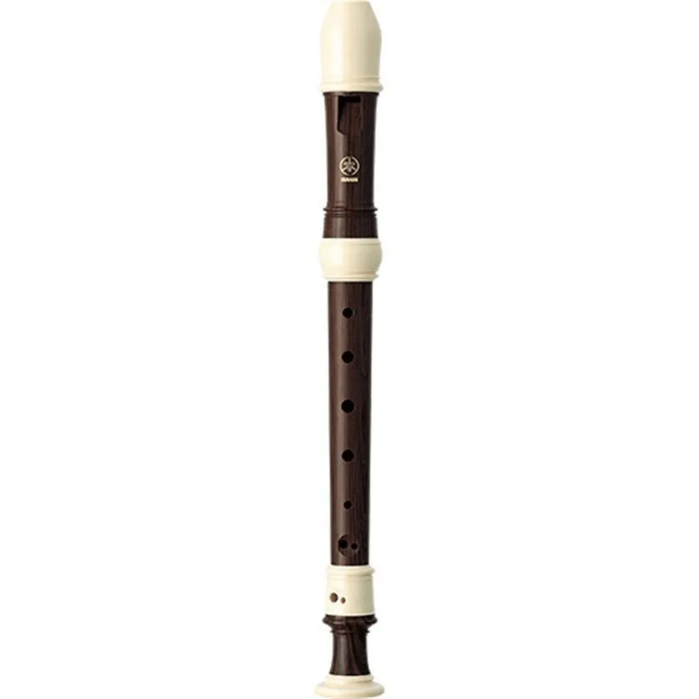
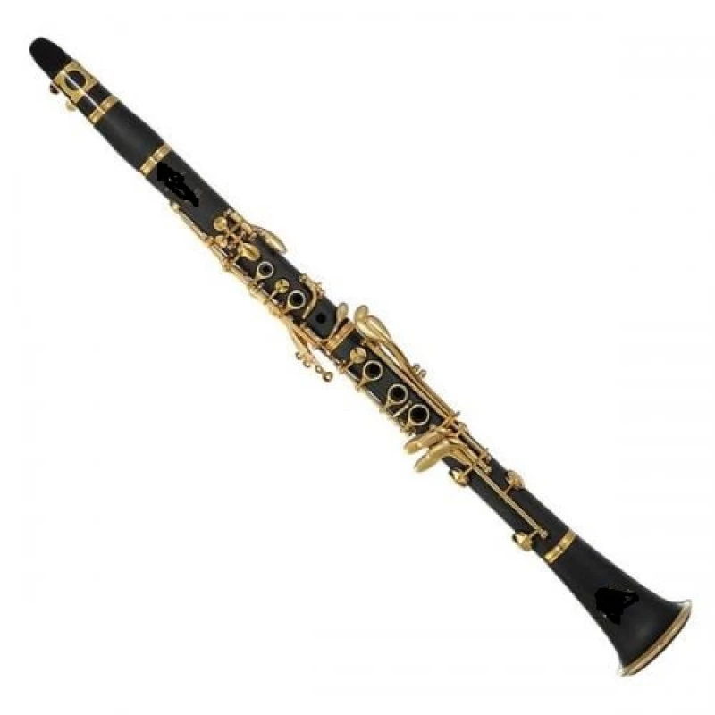

A Essência da Física no seu Órgão Vital
Fundada em 2012 por apaixonados por acústica e lutheria clássica, a Vital nasceu do desejo de unir a arte secular da confecção de instrumentos de sopro com os cálculos mais precisos da física moderna. Acreditamos que o som perfeito não é fruto do acaso, mas sim do controle minucioso da geometria, dos materiais e do comportamento das ondas sonoras.
Especializada no desenvolvimento de órgãos de tubos, flautas e clarinetes, nossa equipe estuda profundamente a ressonância em tubos abertos e fechados para moldar cada harmônico com máxima clareza. Do sopro mais suave de uma flauta ao majestoso eco de um órgão, nossa missão é entregar a músicos e entusiastas uma experiência sonora viva, precisa e memorável.
Laboratório Acústico
Simulador Visual de Onda Estacionária
Nossos Instrumentos

Órgão Vital
A união perfeita de centenas de tubos abertos e fechados em grande escala. O ápice da engenharia acústica física.

Flauta Vital
Instrumento projetado com tubo aberto. Produz timbres cristalinos e vibrantes explorando harmônicos pares e ímpares.

Clarinete Vital
Atua essencialmente como um tubo fechado, destacando apenas harmônicos ímpares para criar um som rico e aveludado.
A Física por Trás do Som

O Fenômeno da Ressonância Acústica
Quando o ar é injetado em um tubo sonoro, a perturbação cria ondas de pressão que se propagam até a extremidade. Ao encontrarem uma saída aberta ou um fundo fechado, essas ondas sofrem reflexão e se sobrepõem, originando ondas estacionárias. A frequência com que o ar vibra dentro da coluna do tubo determina a nota musical emitida e a sua pureza acústica.
Equações Fundamentais da Acústica
A relação matemática entre a velocidade do som no ar (\(v \approx 340\text{ m/s}\)), o comprimento do tubo (\(L\)) e a frequência emitida (\(f_n\)):
\[ f_n = n \cdot \frac{v}{2L} \]
onde \(n = 1, 2, 3, 4\dots\)\[ f_n = n \cdot \frac{v}{4L} \]
onde \(n = 1, 3, 5, 7\dots\) (apenas ímpares)